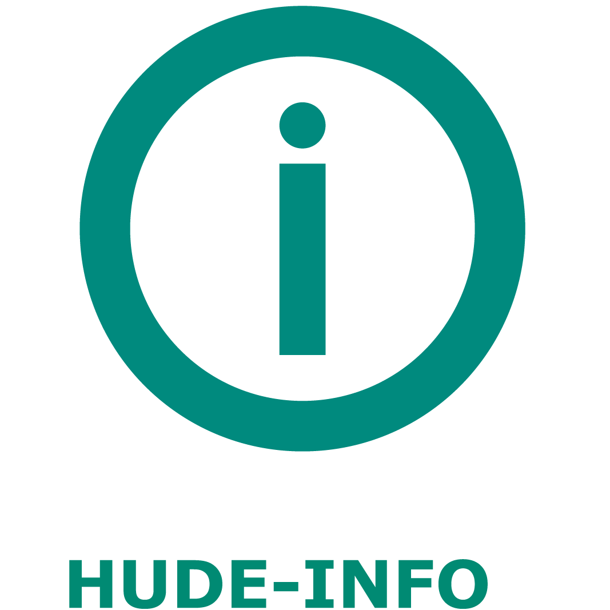
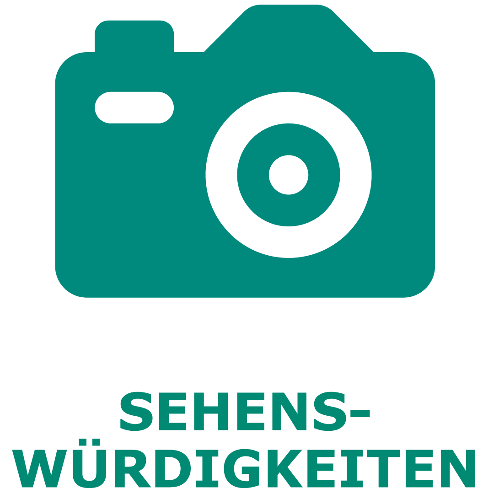
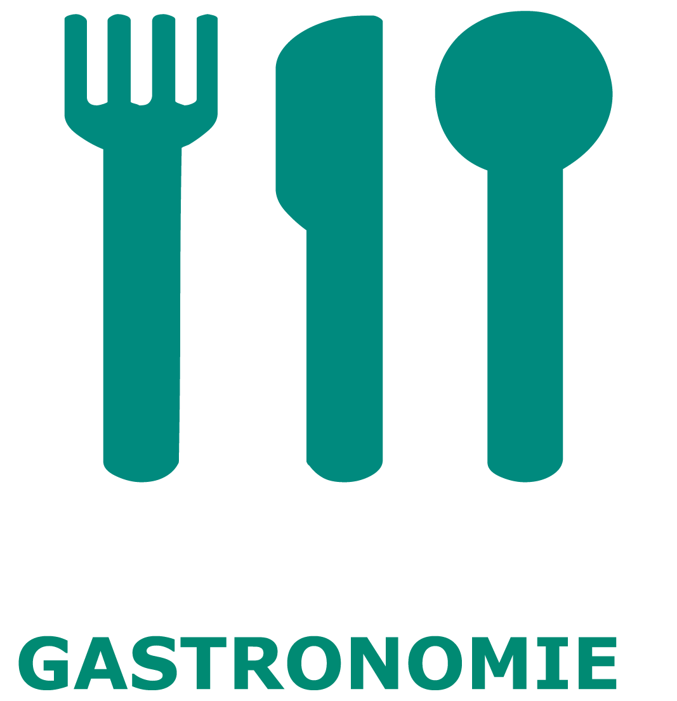
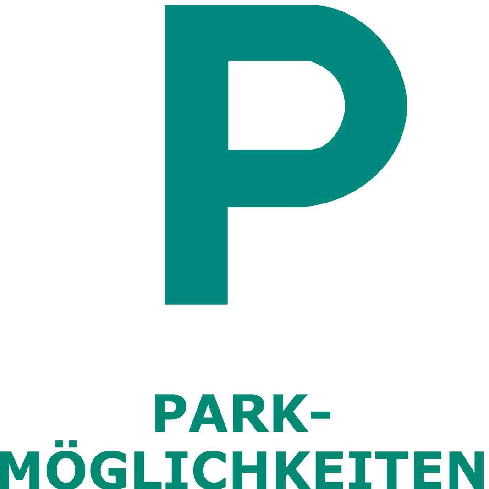
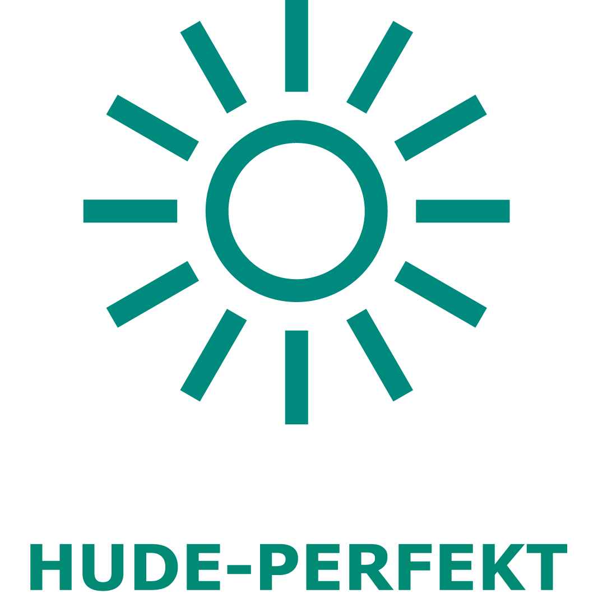
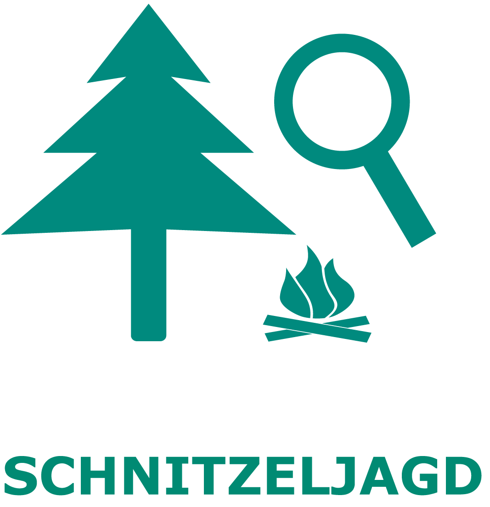

Hude
Menu
Hude-Info
Sehenswürdigkeiten
Attractions
Sehenswürdigkeiten
Klosterbezirk
Monastery district
Klosterbezirk
Klosterruine
Monastery Ruins
Klosterruine
Wassermühle
Watermill
Wassermühle
Klosterschänke
Monastery tavern
Klosterschänke
Torkapelle
Gate chapell
Torkapelle
Museum
Kulturpfad
Culture trails
Kulturpfad
Sonnenuhr
Sundial
Sünnenklock
Planetenlehrpfad
Planetary educational path
Planetenlehrpfad
Sonne
Sun
Sünn
Merkur
Mercury
Merkur
Venus
Erde
Earth
Welt
Mars
Jupiter
Saturn
Uranus
Neptun
Pluto
Artesischer Brunnen
Artesian well
Artesische Pütt
Vielstedter Bauernhaus
Vielstedter farmhouse
Vielstedter Buurhuus
Ziehbrunnen
Well
Pütt
Wanderweg Huder Bach
Creek trail Huder Bach
Wanderweg Huder Bach
Skulpturenufer
Sculptureshore
Skulpturenufer
Klosterbezirk
Monastery area
Klosterbezirk
Skulpturenufer
Sculptureshore
Skulpturenufer
Vielstedter Bauernhaus
Vielstedter farmhouse
Vielstedter Buurhuus
Planetenlehrpfad
Planetary educational path
Planetenlehrpfad
Sonne
Sun
Sünn
Merkur
Mercury
Merkur
Venus
Erde
Earth
Welt
Mars
Jupiter
Saturn
Uranus
Neptun
Pluto
Zeitstrahl 2000
Straße der Megalithkultur
Hasbruch
Wittemoor
Unterkünfte
Accommodations
Unterkünfte
Hotels
Hotel Burgdorf
Hotel Garni
Hotel Klosterschänke
Pensionen & Gästezimmer
Inns & guest rooms
Penschoon & Gästkamer
Hof Heinemann
W. Paulus
Wobig
Würdemann
Ferienwohnungen
Vacation apartments
Ferienwohnen
Alte Bäckerei
Aschenbeck
Burgmannshofk
"Dat lüttje Huus"
Eichkatz
F. Hattendorf
Forsthaus Hasbruch
Haus Lichtblick
Hof Stolle
Klosterschänke
M. Kallisch
Seekermann
U. Kallisch
Ferienhäuser
Vacation houses
Ferienwohnen
Aschenbeck
Hude
Jugendherberge
Youth hostel
Jugendherberge
Wohnmobilstellplatz
Recreation vehicle site
Wohnmobilstellplatz
Gastronomie
Restaurants
Gastronomie
EC-Automaten
ATMs
EC-Automaten
Einkaufen
Shopping
Einkaufen
Parken
Car parks
Parken
Gesundheit
Health service
Gesundheit
Veranstaltungen
Events
Veranstaltungen
Hude-Perfekt
Hude perfect
Hude Perfekt
Schnitzeljagd
Games
Schnitzeljagds
Planetenabitur
Planet exams
Planetenabitur
Planetenabitur A
Planetenabitur B
Planetenabitur C
Fotojagd
Image hunter
Fotojagd
Hude
Klosterbezirk
Skulpturenufer
Spielplätze
Playgrounds
Spielplätze





